Results
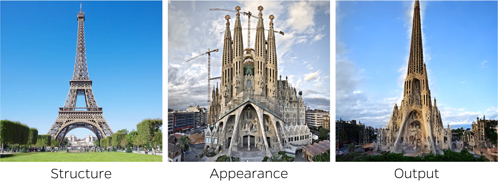
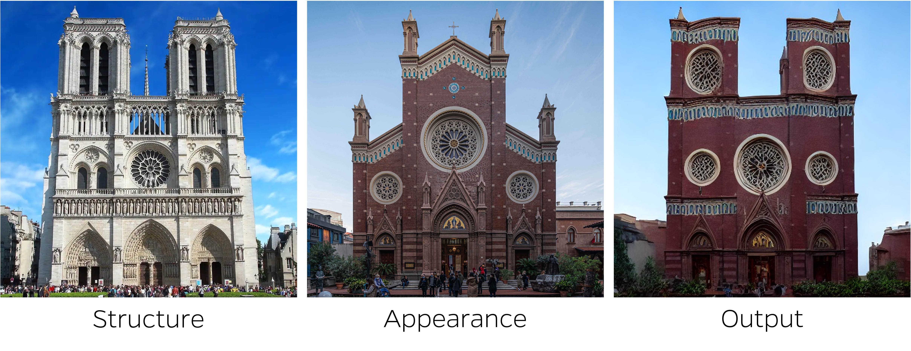
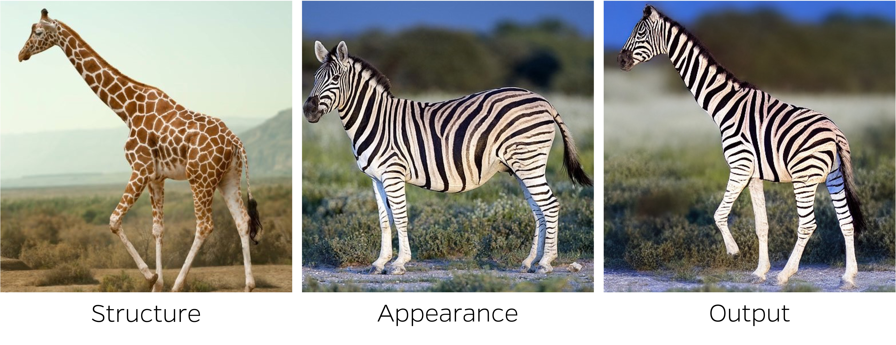
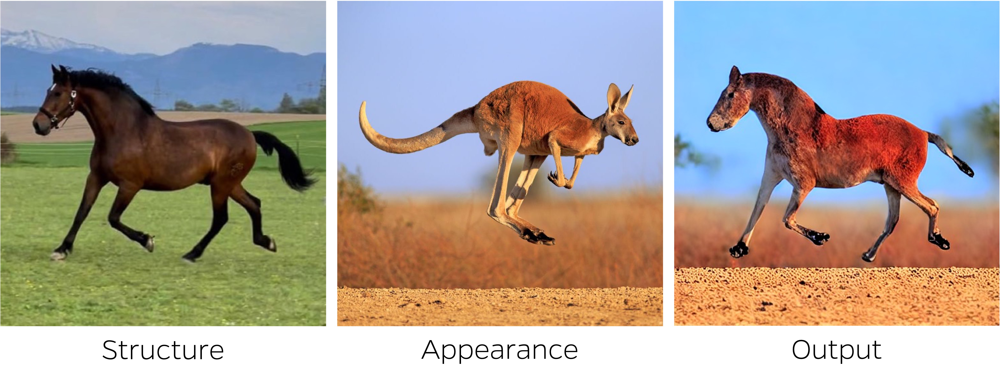
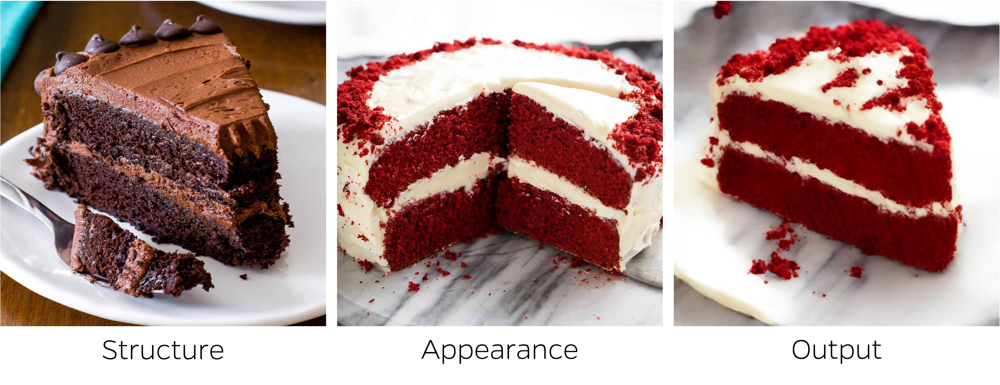
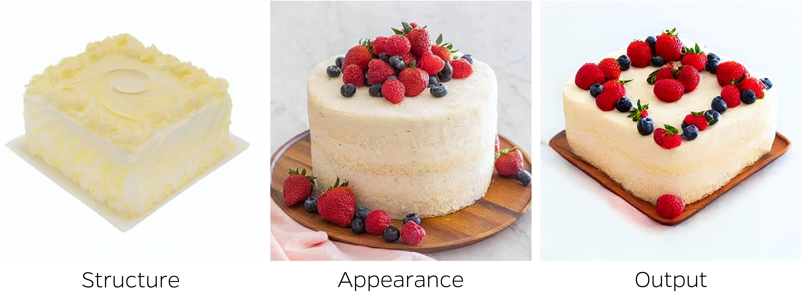
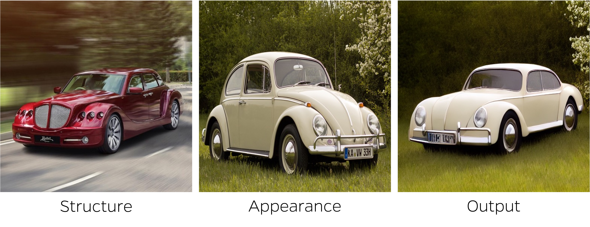
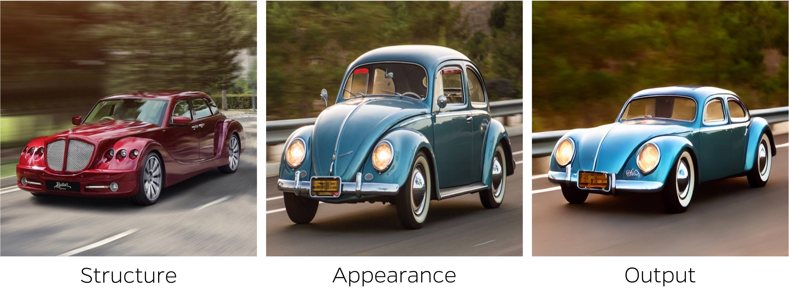
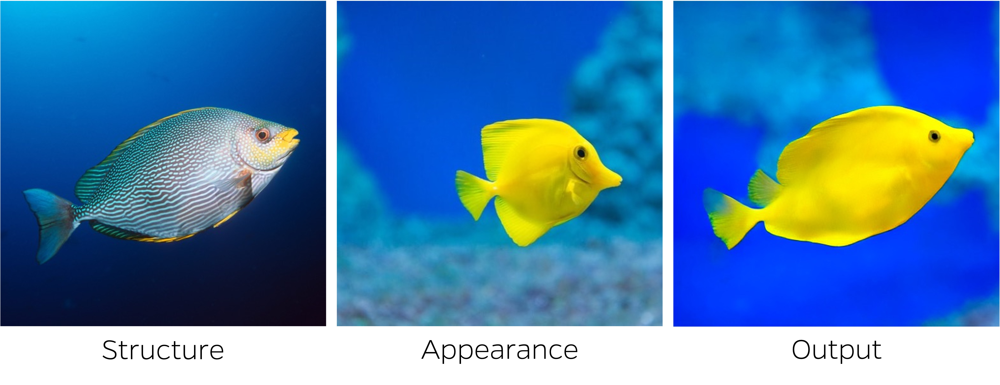
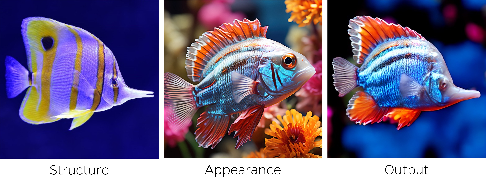
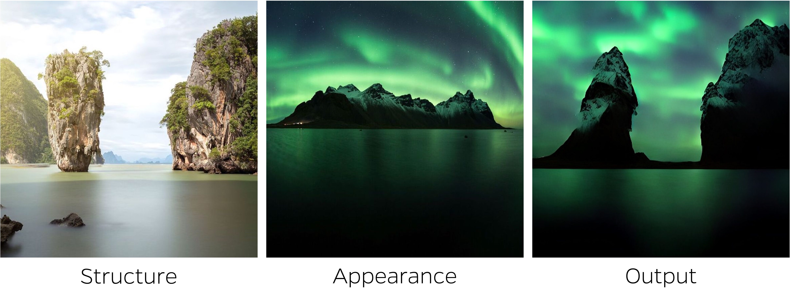
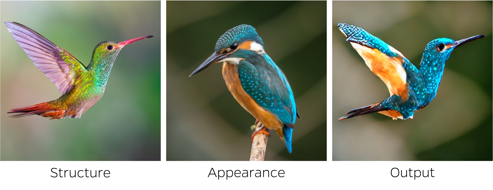
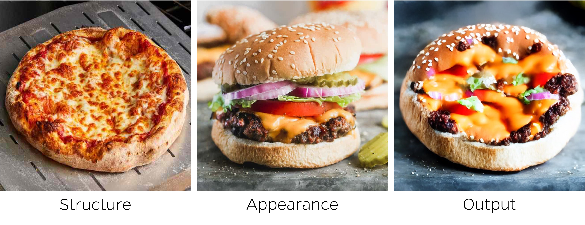
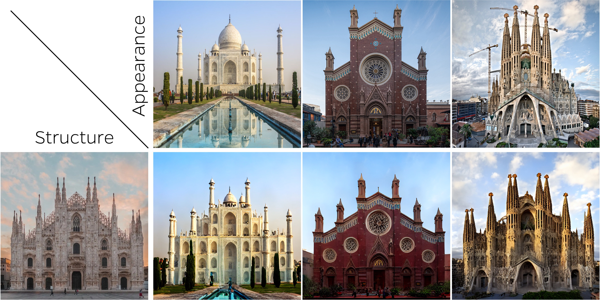
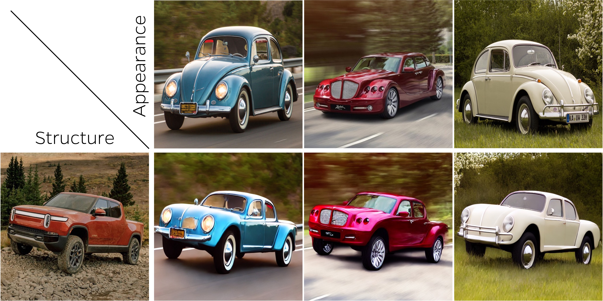
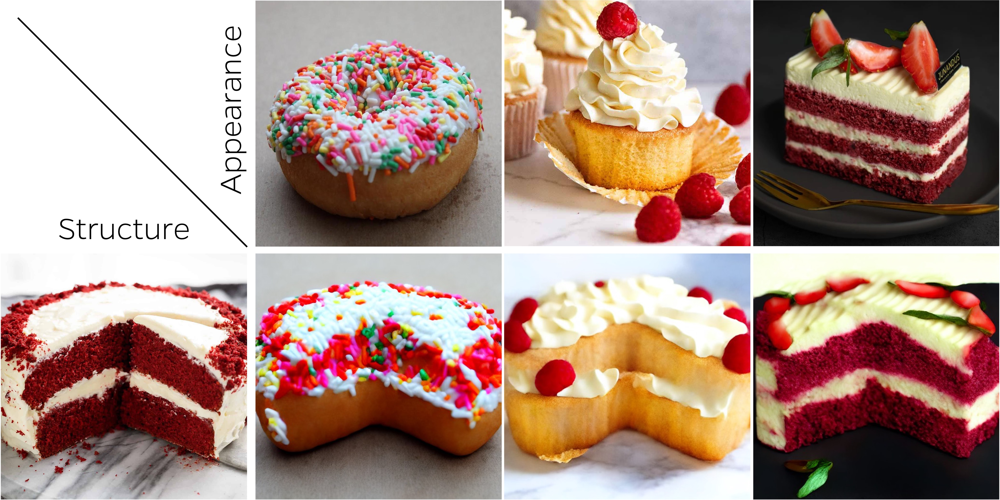
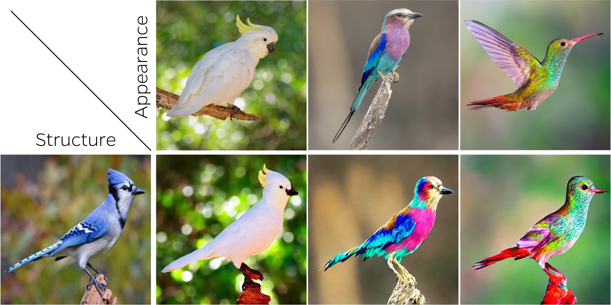

Recent advancements in text-to-image generative models have demonstrated a remarkable ability to capture a deep semantic understanding of images. In this work, we leverage this semantic knowledge to transfer the visual appearance between objects that share similar semantics but may differ significantly in shape. To achieve this, we build upon the self-attention layers of these generative models and introduce a cross-image attention mechanism that implicitly establishes semantic correspondences across images. Specifically, given a pair of images ––– one depicting the target structure and the other specifying the desired appearance ––– our cross-image attention combines the queries corresponding to the structure image with the keys and values of the appearance image. This operation, when applied during the denoising process, leverages the established semantic correspondences to generate an image combining the desired structure and appearance. In addition, to improve the output image quality, we harness three mechanisms that either manipulate the noisy latent codes or the model's internal representations throughout the denoising process. Importantly, our approach is zero-shot, requiring no optimization or training. Experiments show that our method is effective across a wide range of object categories and is robust to variations in shape, size, and viewpoint between the two input images.

Our approach can transfer appearance between cross-domain objects. This transfer is possible even in a zero-shot setting thanks to the strong correspondences already captured by the diffusion model itself.
Additional appearance transfer results obtained by our method.
@misc{alaluf2023crossimage,
title={Cross-Image Attention for Zero-Shot Appearance Transfer},
author={Yuval Alaluf and Daniel Garibi and Or Patashnik and Hadar Averbuch-Elor and Daniel Cohen-Or},
year={2023},
eprint={2311.03335},
archivePrefix={arXiv},
primaryClass={cs.CV}
}